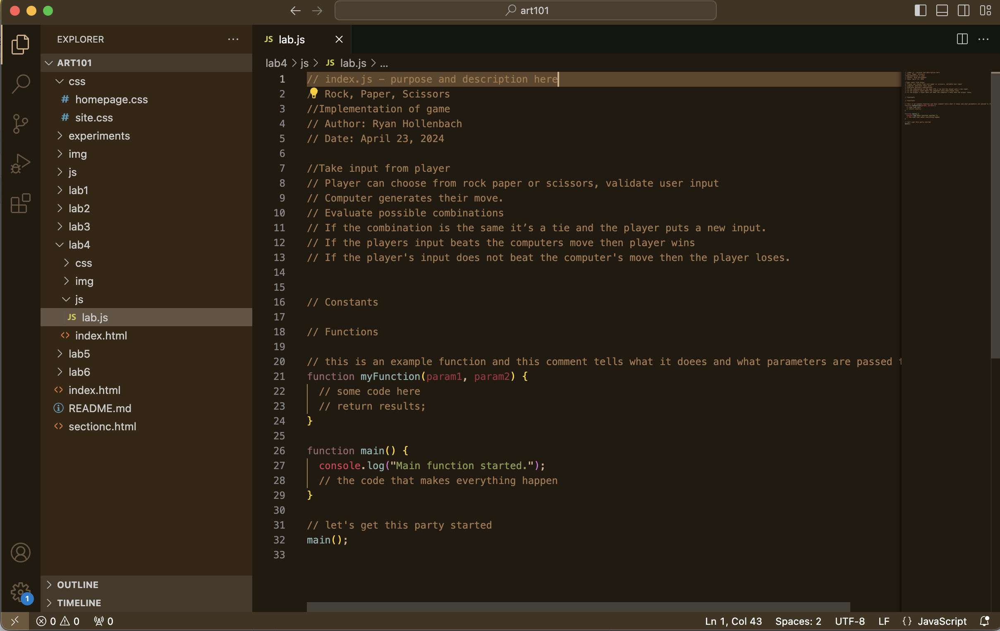

Lab 4: Pseudocoding and Problem-solving
- Take input from player
- Player can choose from rock paper or scissors, validate user input.
- Computer generates their move.
- Evaluate possible combinations.
- If the combination is the same it’s a tie and the player puts a new input.
- If the players input beats the computers move then player wins.
- If the player's input does not beat the computer's move then the player loses.
Challenge
The challenge of the lab was to understand how to psuedocode and to undertsand how it can be helpful when problem solving.
Problems
The main problem I had was understanding what we had to do complete the lab.
Reflection
After understanding what had to be done It was failry easy to complete. I was just confused of what exactly had to be added to the HTML file and what exactly wanted to be turned in.
Results
\
pseudocode on how to play Apex Legends
- Turn on the computer
- Log into the user
- Open up Steam app
- Log into Steam
- Navigate to the library tab
- Locate Apex Legends in the library tab
- Click the launch button on the apex legends page
- Left click on the mouse to go to the main menu
- Choose the gamemode you want to play in the bottom left corner
- Click the “Ready” button located in the bottom left corner
- Choose a legend
- Determine where to land
- Press space to leave the drop ship
- When you land at a designated area, find loot and weapons
- If you are not in the zone, move into the safe zone
- If other players land in the same spot as you, quickly search for a weapon to kill the enemies
- Loot the enemy's bodies and you kill them
- If there are enemies in the zone you can choose to engage or disengage
- Repeat previous step until you die or win the game
pseudocode on rock paper scissors
- Take input from player
- Player can choose from rock paper or scissors, validate user input
- Computer generates their move.
- Evaluate possible combinations
- If the combination is the same it is a tie and the player puts a new input.
- If the players input beats the computers move then player wins
- If the player's input does not beat the computer's move then the player loses.
screenshot of pseudocode
